09Website direction & build · Fictional website concept
Nobody wakes up wanting “probate services.”
One question, followed from a list of services to the live site.
Scroll: write, design, build
Linden & Hale is fictional. Not a real firm and not legal advice.
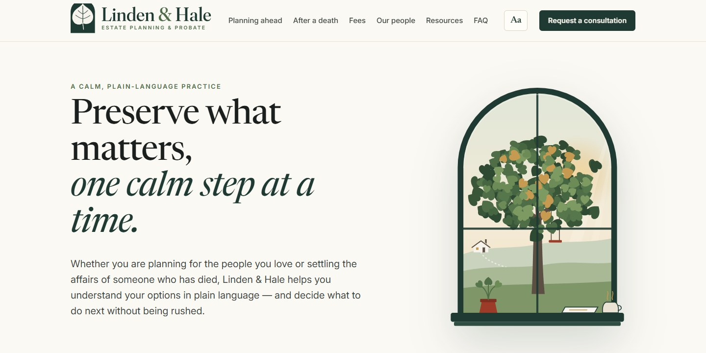
01Write
Start with the visitor’s moment.
The earlier page led with four services. Visitors arrive after a birth or a death.
The first draft: Four ways the practice can help.
AK · 01Nobody arrives looking for “trusts”.
Then ask about their day.
One question, then eight life moments to choose from.
The rewrite: What brings you here today?
02Design
Give the question room.
Grey boxes first. The question centered, then three small steps to follow.
AK · 02Calm starts with space.
Make it feel like the firm.
Evergreen, limestone and honey, with a serif that echoes the wordmark.
03Build
Ship the real page.
Every section works without JavaScript, and nothing typed is sent.
AK · 03Live. Try a moment.

- 01Write
- 02Design
- 03Build
I directed it, branded it and reviewed every version.
From the first draft to the live page, you talk to me.
Make a first-meeting pack ↗For the curiousThe video, the full kit, every version and how it was checked
- Project
- Fictional website concept
- Role
- Direction, brand assets & review
- Deliverable
- Responsive practice website with interactive tools
- Tools
- Astro · TypeScript · hand-written CSS
Walkthrough
Linden & Hale in 69 seconds
A 1.2-minute captioned tour of the finished work. Recorded from the live demo on this site; no sound.
The kit: what Linden & Hale shipped, beyond the pages
Measured qualityLighthouse and axe, run October 28, 2026
- 90Performance
- 100Accessibility
- 100Best practices
- 7/8SEO checks
- Accessibility issues (axe, WCAG 2.1 AA)
- 0
- across 1 page
- Homepage weight
- 368 KB
- everything a first visit downloads
- Largest content painted
- 2.9 s
- simulated mid-range phone, slow 4G
- Layout shift
- 0
- 0.1 or less counts as good
Homepage measured with Lighthouse 12 (mobile) on /sites/linden-hale/, served locally without compression, so live numbers should be at least this good. The one SEO check that fails is “page can be indexed”: demos are kept out of search on purpose because they’re fictional. Rerun with scripts/kit/measure-quality.mjs.
The receipts
The brief
People arrive during some of the hardest moments of their lives. How does a website feel calm and credible, and still help them act?
Visitors to an estate-planning site may be planning for family after a marriage or a birth, caring for an aging parent, or settling the affairs of someone who has just died. The site has to meet each of them where they are — without claiming credentials or results it cannot back up.
- 01Feel calm and credible
- 02Give planners and the bereaved their own clear path
- 03Offer a safe way to ask for help
All 7 versionsFrom a pitch to a practice.
Seven versions of the same idea. Each one moved closer to the person reading it — v4 to v6 in a single day of review.
Northstar Legal concept
A seven-stage interactive demonstration of positioning, structure, copy, visual direction, interaction, responsive behavior and the consultation path.
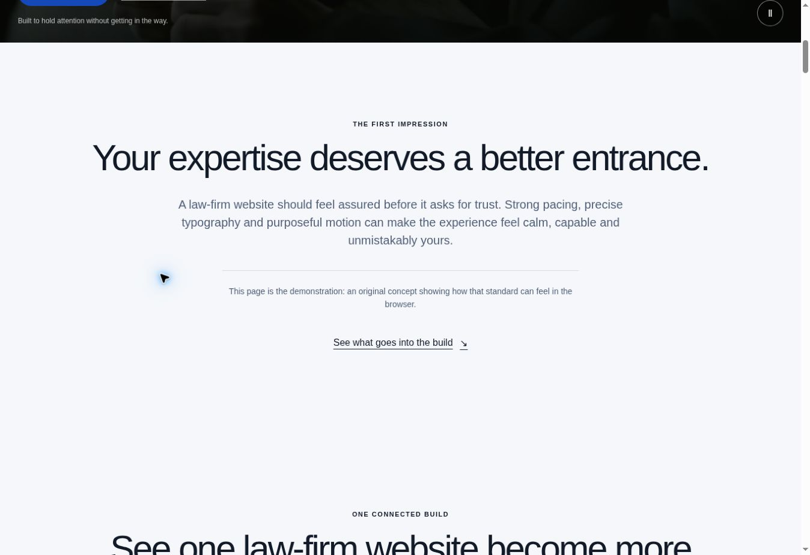
Cinematic proposal
“Before they speak to your firm, they meet your website.”
A motion-led pitch aimed at law firms, built around licensed stock footage.
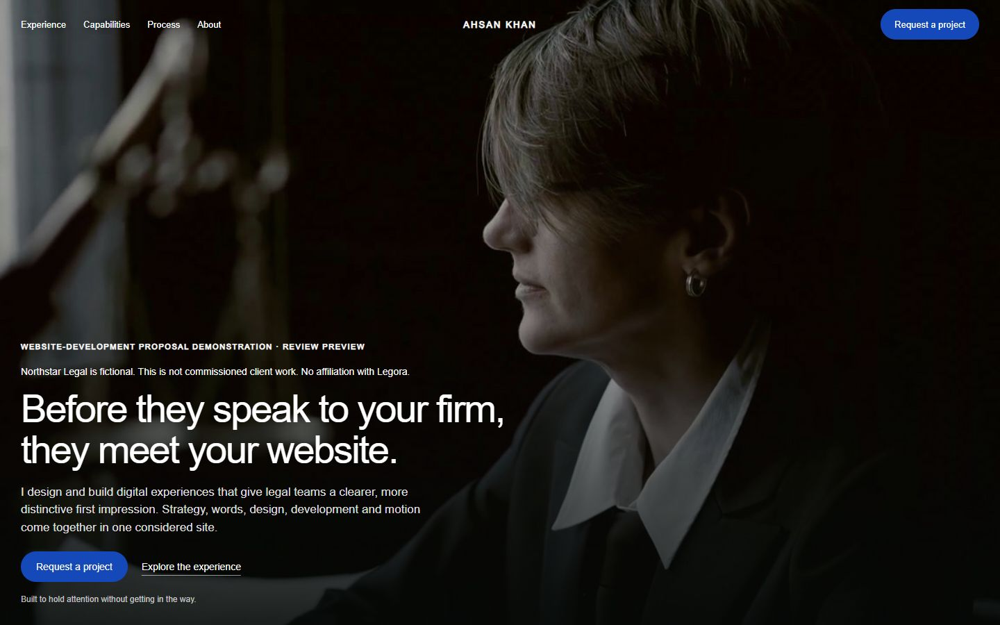
Linden & Hale
“Preserve what matters, one calm step at a time.”
Rebuilt as a complete practice website from a supplied identity, written for the visitor rather than the firm. Clear, but plain.
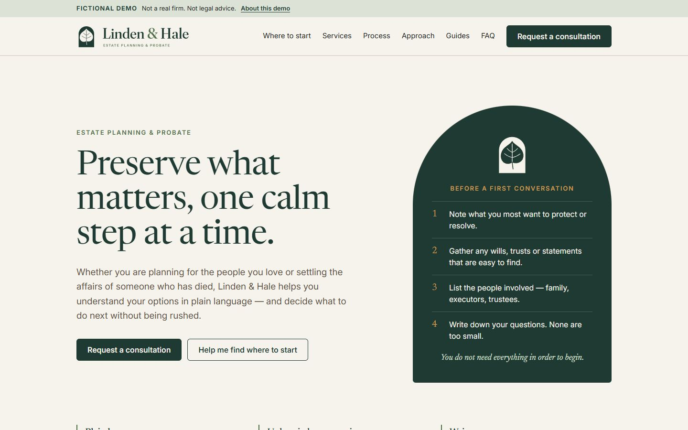
Crisp, interactive redesign
“Preserve what matters. One calm step at a time.”
A product-page rhythm with hands-on tools: a readiness checklist, personal gather lists, a glossary and FAQ search. Polished — but it read like a tech product, not a law firm.
- Readiness checklist
- Gather lists
- Glossary
- FAQ search
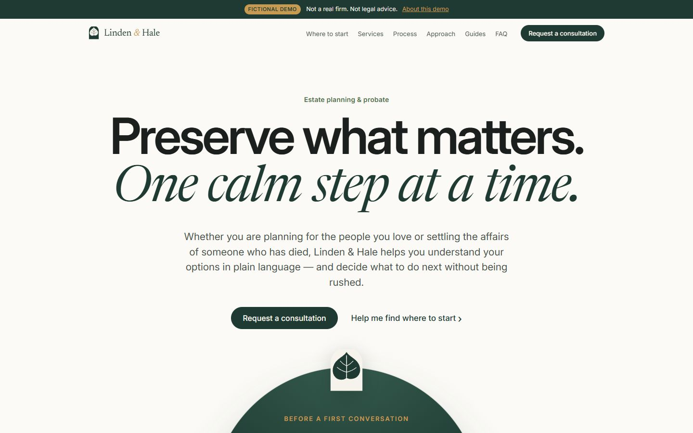
Hero 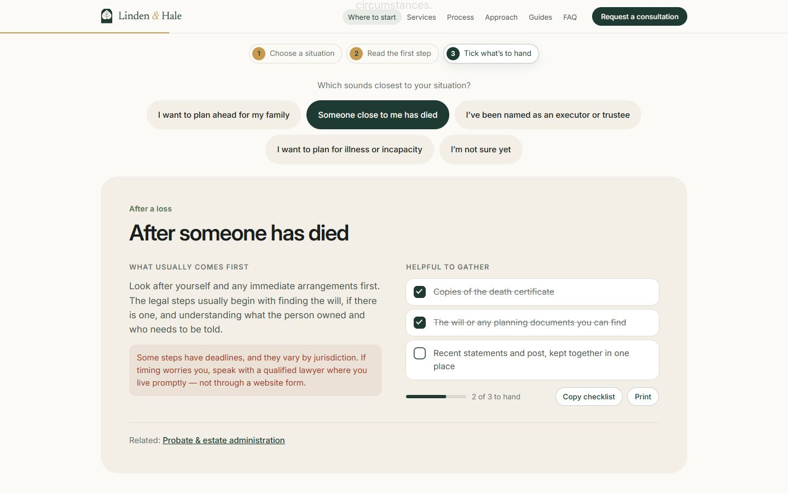
New: a guided start with a personal checklist An illustrated linden world
A custom illustration set in the brand palette: an arched window onto a swaying linden tree, spot art for every service and illustrated guide covers. Livelier — but still not obviously an estate-planning firm.
- Hero window scene
- Service illustrations
- Guide covers
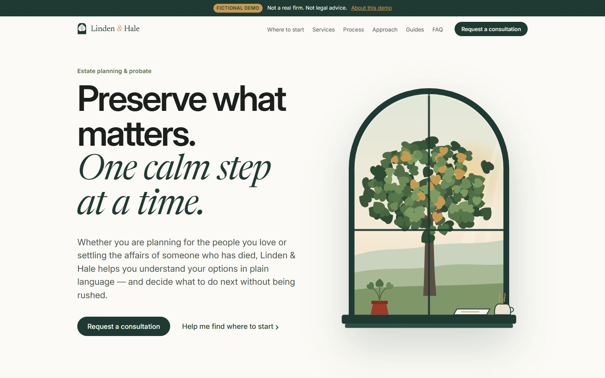
Hero 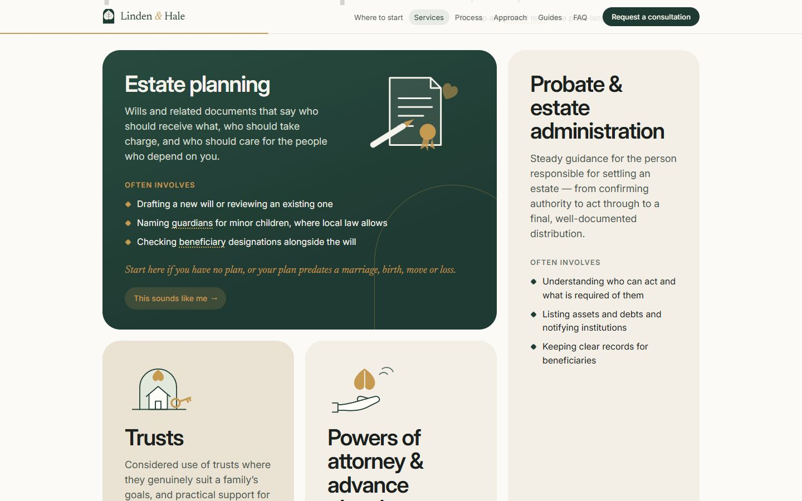
New: an illustration for every service Brand-led, audience-first
“Preserve what matters, one calm step at a time.”
Reorganized around its visitors: the supplied logo, two doors, eight life moments, an after-a-death section, fees and labeled placeholders — then design notes, a printable meeting pack and reading-comfort controls.
- Supplied logo
- Two doors
- Life moments
- Show the thinking
- Meeting pack
- Reading comfort
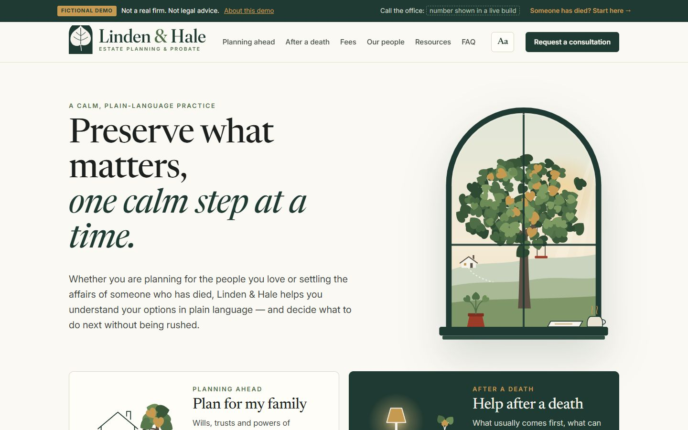
Hero 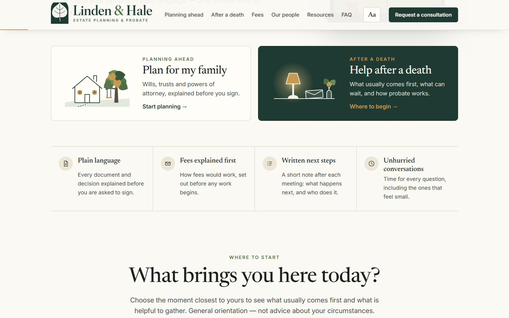
New: two doors for the two audiences A cast for the fiction
The placeholders became people: a named team with illustrated portraits, a New York office with 555-01xx numbers, and a resources section rebalanced so the glossary runs full width under the guides.
- Team portraits
- New York office
- Balanced resources
Palette & typeLook like the firm people would trust.
The supplied serif lockup leads: it sits in the header and footer, and its voice carries into serif headings, spaced labels and quiet, document-like shapes. Custom illustrations show what people are protecting — family, home and memory.
#1F3A32Structure and action#F6F3ECReading surface#EDE6D6Warm panels#C79A52Accent text on Evergreen only#9C3B27Alerts only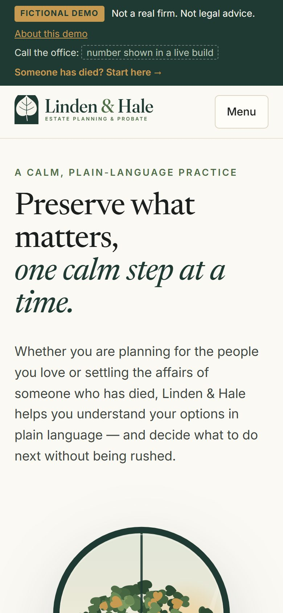
Two doors at the top
“Plan for my family” and “Help after a death” split the two audiences immediately, with “Someone has died? Start here” on every screen.
Family and legacy imagery
A linden tree through an arched window, a generational family tree and a candle by a dusk window, instead of stock photos of desks and documents.
Faces where trust lives
Each person sits in an arched window drawn in the same line-and-fill style as the rest of the site. The view behind them and one object beside them hint at their part of the work.
Build & checksHelpful to use, fine without JavaScript.
A single responsive Astro page with a hand-drawn SVG illustration set. Every section works without JavaScript; small TypeScript modules add the checklists, glossary, design notes, meeting pack and reading-comfort controls.
- Astro
- TypeScript
- Hand-written CSS
- Inline SVG illustration
- Native <dialog>
- Progressive enhancement
What it does
- A “Show the thinking” mode: twelve numbered design notes across the page
- A first-meeting pack that gathers your choices into one page to print, save as PDF or copy
- Reading comfort: three text sizes and a higher-contrast mode, remembered on the device
- Eight life moments, each with a first step and a checklist; a plain-language glossary
- The supplied lockup rebuilt as a responsive component, with a live-text descriptor
How it was checked
- Every section works without JavaScript: native disclosures, radios and CSS :has()
- No contrast failures, no broken anchors, no unlabeled controls in an automated audit
- Text links meet the 24px target size; text scales to 125% without horizontal scroll
- Nothing typed or ticked is sent or stored; the meeting pack is built in the browser
- Motion switches off under reduced motion
What brings you here today? Eight life moments
- Married or partnered
- A new child
- Bought a home
- Caring for a parent
- Retiring
- Someone has died
- Named as executor
- Not sure yet
Ahsan: project direction, brand assets and review at every version.
Linden & Hale is fictional, and so are its people, office and phone numbers. This is not commissioned client work, legal advice or evidence of conversion lift. No real attorney, credential, client quotation or legal outcome is claimed.